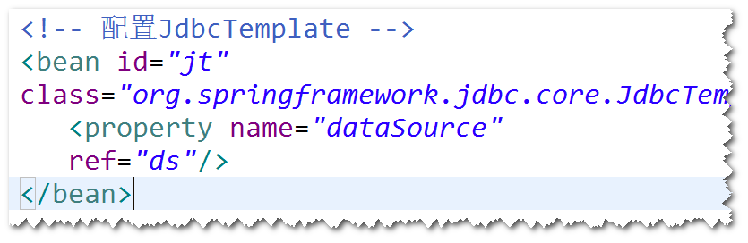

spring-webmvc,spring-jdbc,ojdbc,dbcp,junit。

Spring对jdbc的封装。
注：使用SpringJdbc访问数据库，代码更简洁。（比如不用考虑如何
获取连接与关闭连接等）。
step1. 导包。
spring-webmvc,spring-jdbc,ojdbc,dbcp,junit。
step2.添加spring配置文件。
step3.配置JdbcTemplate。

注：JdbcTemplate对常见的一些数据库操作做了封装。
step4.调用JdbcTemplate提供的方法来访问数据库。
 注：通常会将JdbcTemplate注入到DAO。
注：通常会将JdbcTemplate注入到DAO。